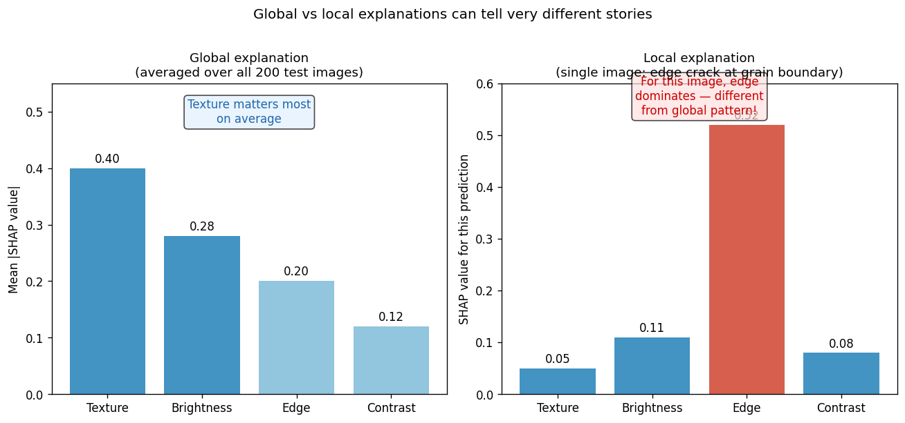
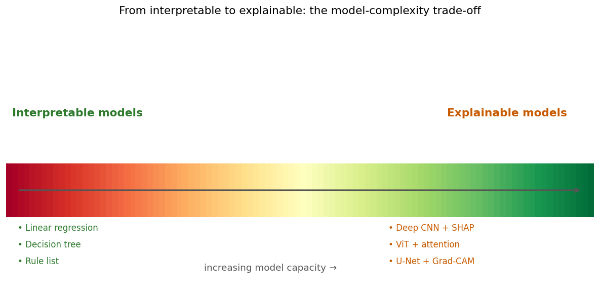
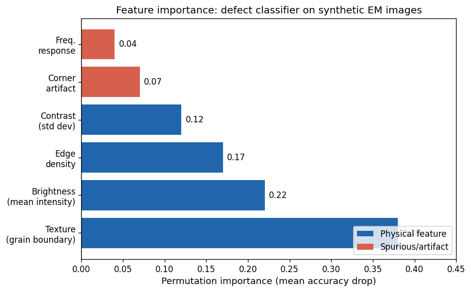
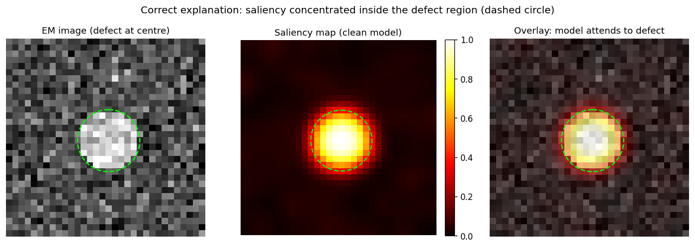
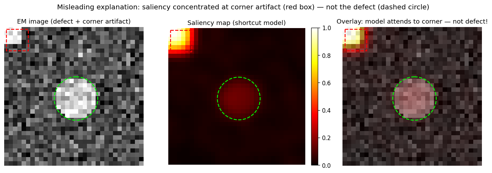
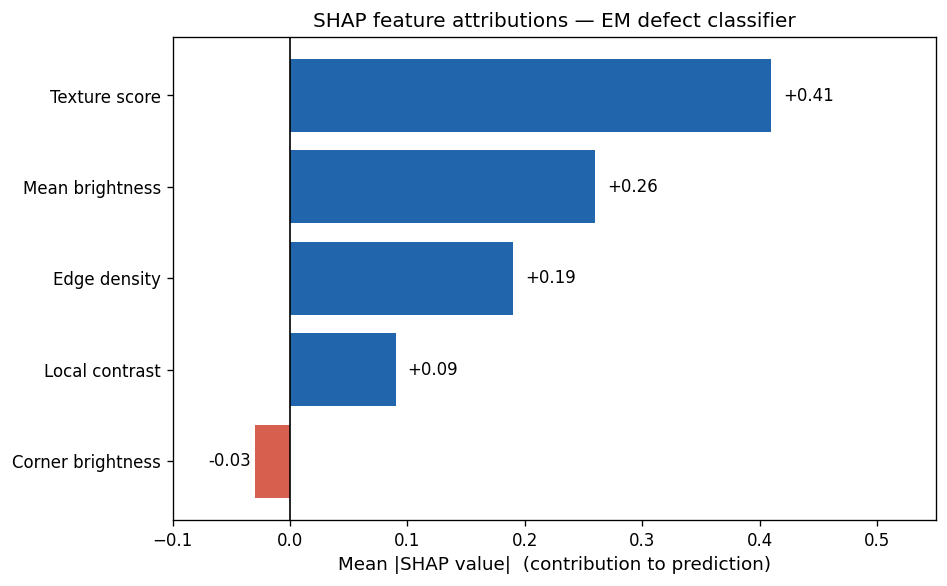
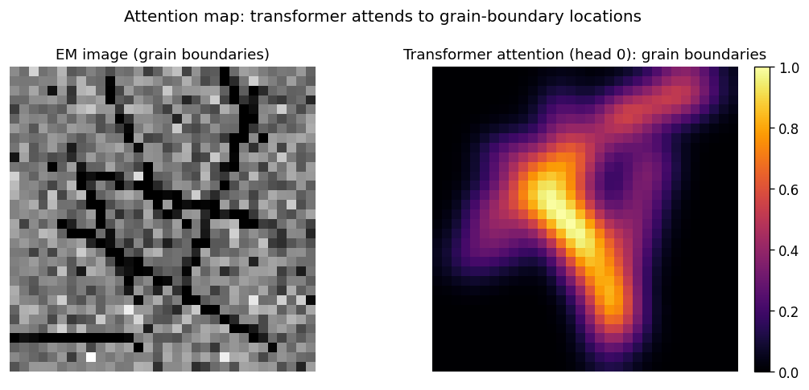
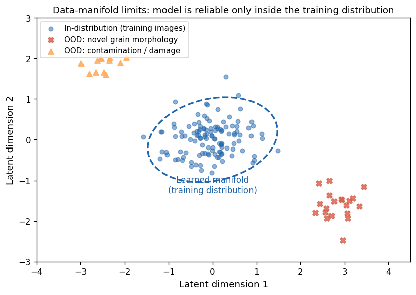
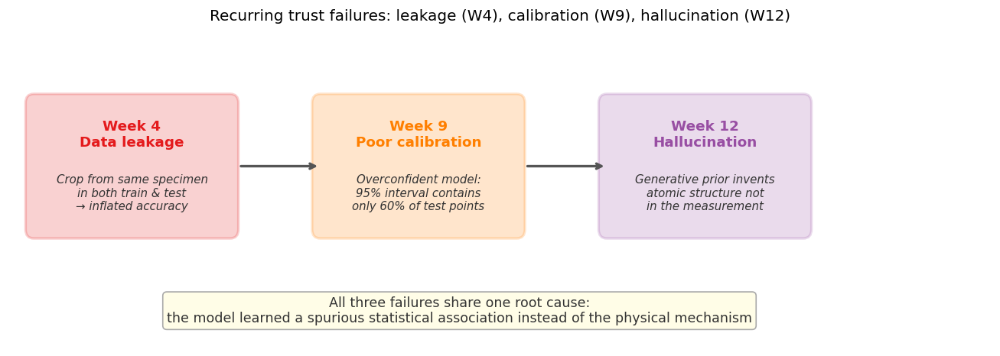
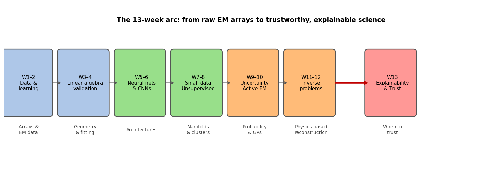

Data Science for Electron Microscopy
Week 13: Explainability, trust & course synthesis
FAU Erlangen-Nürnberg
Institute of Micro- and Nanostructure Research


Recap: Week 12 and today’s question
- Week 12 recap: three strategies for hard inverse problems — ptychography (redundant measurement), physics-informed learning (PDE residual in the loss), and generative models (learned prior on the data manifold).
- The Week 12 gap: all three are more powerful than classical Tikhonov/TV, but “more powerful prior” = more risk. A generative model can hallucinate atomic columns not in the data if the input signal is insufficient.
- Today’s question: we have models that work — but why do they work, when do they fail, and should we trust their output for scientific conclusions?
- Today’s answer — four threads:
- Why explainability is non-negotiable for EM science and regulation.
- The practical XAI toolkit — feature importance, saliency, SHAP, attention maps — each as an answer to “what did the model look at?”
- Honest limits — explanations can themselves mislead; sanity checks are required.
- Course synthesis — Weeks 1→12 as one coherent methodology; exam + miniproject guidance.
Road map and self-study
- Road map: recap + roadmap (2) · why XAI is non-negotiable for EM science & regulation (3) · interpretable vs explainable; global vs local (3) · feature importance & permutation importance (4) · saliency maps & Grad-CAM for EM CNNs (5) · SHAP + Integrated Gradients (4) · attention maps as explanations (2) · honest limits of XAI: explanations can mislead; sanity checks (4) · the recurring trust failures (leakage W4, calibration W9, hallucination W12) (3) · XAI toolkit table + causality vs correlation + expert-in-the-loop (3) · course retrospective: the 13-week arc (4) · exam structure + miniproject guidance (2) · closing (1) — 40 content slides + Continue + References (42 total).
- Self-study:
notebooks/week13_explainability.ipynb— train two tiny CNNs on 32×32 synthetic EM images; the clean model learns a real centre-disk defect (gradient saliency inside defect = 0.627, outside = 0.195, ratio 3.2×); the shortcut model learns a spurious corner artifact (corner saliency = 0.500, defect-region saliency = 0.054, ratio 9.3×). Occlusion saliency (patch=4) amplifies the contrast: inside = 0.698, outside = 0.006, ratio 109×. Both models achieve ≥ 0.99 test accuracy — accuracy alone cannot detect the shortcut.
Why explainability matters in EM science
- Science demands falsifiability: a model that cannot say why it classified an image as “defect present” makes no testable mechanistic claim — it is an oracle, not a scientific model.
- Engineering demands accountability: an EM analysis pipeline deployed in semiconductor QC, battery R&D, or materials certification must be auditable. “The network said so” is not an answer an engineer can put in a report.
- The EM-specific mandate: ground truth in EM is expensive (HAADF + EELS + atom-by-atom validation). When you cannot validate every prediction, you must be able to verify that the model uses physically meaningful features.
- Regulation is catching up: EU AI Act classifies high-risk AI (safety-relevant inspection, medical imaging) as requiring explanation. If your EM classifier feeds a safety decision, you have a legal obligation to explain it.
Who needs explanations from your EM model?
- Materials scientist — “Which atomic columns drove the defect prediction? Which crystallographic direction?” Full mechanistic-level explanation.
- Process engineer — “Which sample preparation parameter correlates with this artefact class?” Process-level explanation, actionable.
- Regulator / standards body — “Show data provenance and per-image justification.” Prediction-level + audit trail.
- EM operator — “Should I re-acquire this region at higher dose?” Actionable recommendation, not feature importances.
- The key rule: an explanation is not true or false in isolation — it must be fit for recipient and decision. A SHAP plot is perfect for a data scientist and useless for an operator.
Why the hallucination warning from Week 12 is an explainability problem
- Week 12 recap (trust failure): a generative model used as a reconstruction prior can invent atomic structure not in the measurement. The reconstruction looks perfect; the residual looks like Poisson noise. How do you catch it?
- The answer is explainability: attribution maps (saliency, SHAP) on the reconstruction network can reveal which input pixels did not support a reconstructed feature — hallucinated structure has no attribution support in the raw data.
- The Week 9 calibration link: a poorly calibrated model says “95% confident” when it should say “60% confident.” Calibration = the uncertainty axis of trust. Explainability = the mechanism axis. Both are required.
- Together: trust = calibrated uncertainty (Week 9) + faithful explanation (today). Neither alone is sufficient.
Interpretable vs explainable
- Interpretable model: transparent by construction — you can read the decision rule directly off the parameters.
- Examples: linear regression (decision = weighted sum of features), decision tree (decision = sequence of threshold checks).
- Explainable model: the model itself is opaque, but a post-hoc method approximates its reasoning.
- Examples: SHAP values on a CNN, saliency map on a U-Net, attention weights on a transformer.
- Critical distinction: SHAP does not make a CNN interpretable — it makes it explainable. The CNN is still a black box; SHAP is a second artefact that approximates the black box’s reasoning and can itself be wrong.
- The trade-off: interpretable models may be less accurate; explainable models are more powerful but carry a second layer of approximation error.
Global vs local explanations

Global explanation averaged over 200 test images (left) vs local explanation for a single edge-crack image (right) — different features dominate.
The interpretable-to-explainable spectrum

From interpretable (left, green) to explainable (right, orange): increasing model capacity requires post-hoc methods to recover a human-readable explanation.
Feature importance: what is it?
- Question it answers: “Which input feature, on average, contributes most to the model’s predictions?”
- Model-specific importances (e.g. random forest Gini importance): computed from the model’s internal structure; fast but can be biased toward high-cardinality or correlated features.
- Permutation importance (model-agnostic): shuffle one feature’s values across all test images; measure accuracy drop. Large drop → feature was important. \[\text{PI}_j = \text{score}(X) - \text{score}(X_{\pi_j})\] where \(X_{\pi_j}\) is the dataset with feature \(j\) randomly shuffled.
- Advantage: works with any model; directly measures the information loss when a feature is removed.
- Limit: if two features are correlated (e.g. mean brightness and local contrast in a HAADF image), permuting one may not reduce accuracy because the model can use the other — the importances are split and each looks smaller than its true effect.
Permutation importance: EM example

Permutation importance for six features of the EM defect classifier (mean accuracy drop over 50 shuffles). Blue = physical EM feature; red/orange = artifact. The corner artifact has negligible importance because the clean model learned to ignore it.
When permutation importance misleads
- Correlated features: if brightness and contrast are both high at defect sites, permuting brightness alone allows the model to use contrast — so brightness looks unimportant even though removing both would destroy accuracy.
- Solution: use SHAP (later), which accounts for all feature subsets — or explicitly decorrelate your features first.
- The shortcut trap: if a spurious feature (corner artifact) is highly correlated with the label in your training data, permutation importance flags it as “important” — which is factually true but physically wrong. The importance tells you what the model relies on, NOT what it should rely on.
- Take-away: permutation importance + domain knowledge + saliency maps form a trio. No single method is sufficient for a trustworthy audit.
Feature importance vs saliency: which to use?
- Feature importance (permutation / SHAP): operates on tabular or pre-extracted features (mean brightness, texture score, …). Best for: structured datasets, regression models, global model auditing.
- Saliency maps: operate directly on pixel space. Best for: CNNs on images; provides spatial localisation — which region, not just which feature.
- Rule of thumb for EM:
- Tabular dataset (composition, processing parameters) → permutation importance + SHAP.
- Image dataset (HAADF, BF-STEM, SEM) → saliency map + Grad-CAM.
- Both → use both and check they tell the same story.
- Warning: neither method tells you whether the model is physically correct — only what it currently uses. Domain validation is always the final step.
Saliency maps: the input-gradient idea
- Question it answers: “Which pixels in this image most strongly affect the model’s confidence?”
- Input-gradient saliency: compute \(\left|\frac{\partial \hat{y}_c}{\partial x_i}\right|\) — the absolute gradient of the predicted class-\(c\) logit with respect to each input pixel \(x_i\).
- Large gradient at pixel \(i\) → a small perturbation to \(x_i\) changes the prediction strongly → the model “cares about” pixel \(i\).
- How to compute: in PyTorch, call
logit.backward()then readinput.grad— two lines of code added to any trained CNN. - Visualisation: display the gradient magnitude as a heat map overlaid on the original EM image. Warm colours = high saliency (model attends here); cool/dark = low saliency.
- Cost: essentially free — one extra forward + backward pass per image.
Saliency maps: clean model

Left: EM image with lime-circle defect region. Centre: gradient saliency map. Right: overlay. The clean model’s saliency concentrates inside the defect (inside = 0.627, outside = 0.195, ratio ≈ 3.2×) — the model attends to the physically meaningful region.
Grad-CAM: class activation maps for CNNs
- Problem with input-gradient saliency: the gradient at input pixels is very noisy — individual pixel gradients are unstable and hard to interpret for deep CNNs.
- Grad-CAM’s idea Selvaraju, Ramprasaath R. et al., (2017): compute gradients at the last convolutional feature map (not the input), weighted-average the feature channels, apply ReLU, and upsample back to the image. \[L^\text{Grad-CAM}_c = \mathrm{ReLU}\!\left(\sum_k \alpha_k^c A^k\right), \quad \alpha_k^c = \frac{1}{Z}\sum_{i,j}\frac{\partial y_c}{\partial A^k_{ij}}\]
- What you get: a smooth, interpretable spatial heat map at the scale of the last conv feature map (typically 8×8 or 16×16 for a 32-layer CNN on a 224×224 image).
- EM use: plug into any trained defect classifier or segmentation encoder; Grad-CAM shows which image regions activated the defect-detection filters.
Occlusion saliency: model-agnostic localisation
- Occlusion saliency: hide a square patch of pixels (replace with mean value 0.35), measure confidence drop. Repeat for all patch positions → a heat map of “which region is responsible.”
- Advantage: model-agnostic — works with any classifier, even non-differentiable ones. Does not require backpropagation.
- EM result from notebook (SEED=42, patch=4):
- Clean model: occlusion saliency inside defect = 0.698, outside = 0.006, ratio 109×.
- Shortcut model: corner = 0.531, defect region ≈ 0.001, ratio >1000×.
- Occlusion > gradient ratio: because gradient saliency only sees the local slope; occlusion sees the global effect of removing a region. Both agree on the winner — the two methods cross-validate each other.
The misleading-explanation case

Left: EM image with lime-circle defect and corner artifact (red box). Centre: gradient saliency map. Right: overlay. The shortcut model’s saliency concentrates at the corner artifact, not the defect (corner = 0.500, defect region = 0.054, ratio ≈ 9.3×) — spatially coherent but physically wrong. Accuracy 0.990.
SHAP: additive attribution at intuition level
- Question it answers: “How much did each feature push the prediction above or below the model’s baseline?” Lundberg, Scott M. et al., (2017)
- Additive attribution: decompose the prediction \(f(x)\) as: \[f(x) = \phi_0 + \sum_{i=1}^{D} \phi_i, \quad \text{where } \phi_0 = \mathbb{E}[f(X)] \text{ (baseline)}\] Each \(\phi_i\) is the attribution of feature \(i\) — positive = pushed toward the predicted class; negative = pushed away.
- The key property (completeness): the attributions always sum to the full prediction. You cannot “lose” signal or “double-count.”
- Intuition: think of SHAP as the “fair share of credit” each feature gets for the prediction — the game-theory analogy of a coalition where each player’s contribution is measured by how much they add when they join.
SHAP in action: EM defect classifier

SHAP feature attributions for the EM defect classifier: texture score dominates (φ=0.41); corner brightness has slightly negative attribution (φ=−0.03) — the clean model learned to essentially ignore the artifact.
Integrated Gradients: SHAP’s pixel-level cousin
- Integrated Gradients (IG) Sundararajan, Mukund et al., (2017) — a pixel-level attribution for CNNs that satisfies the completeness axiom.
- Plain-English idea: average the model’s sensitivity (gradient) along a straight interpolation path from a blank baseline image to the actual input. Each pixel’s attribution is its average influence across that path. Attributions then sum exactly to the prediction minus the baseline — no signal is lost or double-counted.
- Completeness: \(\sum_i \mathrm{IG}_i(x) = f(x) - f(x_0)\) — same guarantee as SHAP, but at pixel level.
- EM use: IG on a segmentation CNN answers “which pixels of the HAADF image most contributed to labelling this region as a grain boundary?” — a per-pixel attribution map with a mathematical guarantee.
- Difference from gradient saliency: IG integrates along the path from baseline to input, capturing non-linear effects; raw gradient saliency only sees the local slope at the input.
SHAP: honest limitations
- Cost: exact SHAP (TreeSHAP for trees, KernelSHAP for any model) requires exponentially many model evaluations in the worst case; practical implementations use approximations.
- Correlation problem: SHAP assumes the model can be meaningfully evaluated with any feature combination. For highly correlated EM features (brightness, contrast, texture), SHAP attributions can be numerically unstable.
- SHAP is a post-hoc approximation: it faithfully explains the model’s statistical associations, not the underlying physical mechanisms. If the model learned a spurious correlation (corner artifact), SHAP dutifully attributes credit to the artifact. SHAP cannot tell you whether the model’s reasoning is physically correct.
- The take-away: SHAP + domain knowledge. The physicist must validate whether the top SHAP feature is physically plausible. The XAI method only tells you what; the scientist tells you whether.
Attention maps as explanations
- Transformers Vaswani, Ashish et al., (2017) compute a self-attention map \(A \in [0,1]^{N \times N}\) over image patches (or tokens): \(A_{ij}\) tells how much patch \(i\) attends to patch \(j\) when computing its representation.
- As an explanation: aggregate the attention of the classification token (
[CLS]) over all patches → a spatial heat map showing which image regions the transformer “focused on.” - Advantage over saliency: attention is intrinsic to the architecture — no extra backward pass needed; the attention weights are computed during the normal forward pass.
- EM use: Vision Transformers fine-tuned on HAADF/STEM images show attention maps that concentrate on atomic columns, grain boundaries, or phase interfaces — matching the physically relevant regions.
Attention map: grain-boundary detection

Left: synthetic EM grain image. Right: transformer attention map — attention peaks along grain-boundary locations (high attention = yellow). Attention provides a spatial explanation without a backward pass.
Honest limits of XAI: explanations can mislead
- Gradient-based saliency is not robust: a single adversarial pixel perturbation can flip the saliency map without changing the prediction Kindermans, Pieter-Jan et al., (2019). The saliency map reflects the local gradient landscape, which is highly non-linear and non-unique.
- Sanity check Adebayo, Julius et al., (2018): if you randomise the model’s weights (untrained), the saliency map should look like noise. If it still looks like the input image, the saliency method is detecting edge-detection artefacts in the input, not model reasoning.
- SHAP on correlated features: as discussed — attributions can be numerically unstable and split non-unique ways across correlated predictors.
- Attention ≠ explanation: high attention weight does not guarantee causal influence on the prediction — the downstream linear layer may weight that patch’s representation at near-zero. Kindermans, Pieter-Jan et al., (2019)
Sanity checks for saliency methods
- The Adebayo test Adebayo, Julius et al., (2018): randomise the model’s weights (replace with untrained random values), then compute the saliency map. If the saliency map still looks like the input image’s edges — the method is detecting image structure, not model reasoning. This is a failure of the method, not the model.
- Cascade randomisation: progressively randomise from the top layer down. A faithful saliency method should become noise as more layers are randomised. Input-gradient saliency passes this test; some smoothing-based methods (e.g. SmoothGrad without temperature tuning) can fail.
- The practical sanity check for EM:
- Run saliency on the trained model. Record the top-3 hotspot regions.
- Repeat on a randomly initialised model. If the hotspots survive, they reflect the input’s structure (bright atomic columns, grain boundaries) — not what the model learned.
- Only hotspots that vanish with randomisation are evidence of genuine model attention.
- Conclusion: never deploy an XAI method in an EM analysis without a weight-randomisation sanity check.
Trust & failure modes: data-manifold limits

Latent-space illustration of training distribution (blue ellipse) vs OOD test inputs (red X = novel grain morphology, orange triangle = contamination/damage). The model is reliable only inside the ellipse.
Distribution shift in EM
- Distribution shift: the test distribution differs from the training distribution in a systematic way. Common in EM because instruments, operators, specimen preparation, and imaging conditions vary.
- EM-specific failure modes:
- Microscope drift: calibration artifacts shift between sessions → model trained on one session may fail on another.
- Dose creep: beam-sensitive specimens accumulate damage during acquisition → late frames are OOD relative to early-frame training data.
- Specimen thickness: a model trained on thin lamella (< 20 nm) may fail on thicker sections (100 nm) where multiple-scattering changes image statistics.
- Detection strategy: (a) monitor model confidence on streaming data — unusual drop or spike flags OOD; (b) track reconstruction error if an autoencoder is available; (c) use conformal prediction (Week 9) for a distribution-free coverage guarantee.
- The shortcut-model failure (notebook): the shortcut model achieves 0.990 accuracy on the corner-artifact test set. Remove the artifact → accuracy still 0.990, but now the model no longer understands defects. Both numbers look fine; neither tells you the model is broken.
The recurring trust failures: overview

Three trust failures from the course: data leakage (W4, red), poor calibration (W9, orange), and hallucination (W12, purple). All share one root cause: the model learned a spurious statistical association instead of the physical mechanism.
Leakage (W4) and calibration (W9) in the XAI lens
- Data leakage (W4) revisited: the notebook’s shortcut model is a leakage case — the corner artifact is a proxy for specimen identity (or a scan-artifact correlated with the operator’s labelling session). Fix:
GroupKFold(n_splits=5, groups=specimen_id). Saliency diagnostic: if the saliency hotspot is at a scan artifact rather than the physical defect, suspect leakage. - Calibration (W9) revisited: a poorly calibrated model says “95% confidence — defect present” when the true defect rate at that confidence level is only 60%. An overconfident XAI explanation of a miscalibrated model compounds the error: the attribution looks crisp but the underlying probability is wrong. Fix: reliability diagram before deploying any explanation.
- Combined prescription:
- Before computing any XAI map: check for leakage with GroupKFold.
- Before trusting any XAI map: check calibration with a reliability diagram.
- After both checks: compute and interpret the XAI map.
Hallucination (W12) in the XAI lens
- Hallucination (W12) revisited: a generative model used as reconstruction prior invents atomic columns not in the low-dose measurement. The reconstruction looks physically plausible; the residual looks like Poisson noise. How does XAI help?
- Attribution map as hallucination diagnostic: compute the saliency/IG map of the reconstruction network. For a legitimate reconstructed feature, there should be input-pixel attribution support — the raw measurement pixels that justify the feature. For a hallucinated feature, the attribution map shows near-zero support from the noisy input — the model invented the feature from its prior, not from the data.
- Practical rule: if a reconstructed atomic column has < 5% of the input saliency of a “known-reliable” column, flag it as a potential hallucination and re-acquire at higher dose.
- The honesty principle: every reconstructed feature that cannot be supported by an input attribution should be reported with an explicit uncertainty flag. XAI makes the hallucination risk quantifiable rather than invisible.
The XAI toolkit at a glance
| Method | What it shows | Works on | Best for EM |
|---|---|---|---|
| Permutation importance | Which feature degrades accuracy most | Any model | Tabular descriptors (composition, process params) |
| Input-gradient saliency | Which pixels have highest sensitivity | Differentiable CNN | Fast, cheap image attribution |
| Grad-CAM Selvaraju, Ramprasaath R. et al., (2017) | Which conv feature-map regions activate | CNN | Spatial localisation, smoother than pixel saliency |
| Occlusion saliency | Which patch reduces confidence most | Any model | Robust cross-validation of gradient saliency |
| SHAP Lundberg, Scott M. et al., (2017) | Signed, complete attribution per feature | Any model | Global feature importance, correlated features |
| Integrated Gradients Sundararajan, Mukund et al., (2017) | Pixel-complete attribution along baseline path | Differentiable CNN | Per-pixel attribution with mathematical guarantee |
| Attention maps Vaswani, Ashish et al., (2017) | Which image patches the transformer attended to | Transformers | ViTs for STEM/SEM images |
Causality vs correlation in EM process chains
- The EM data-science trap: ML models find statistical correlations; EM scientists need causal mechanisms.
- Example: a defect-detection model trained on images from Furnace A at 900 °C may correlate furnace-ID with defect class (because Furnace A happens to have more defects). Moving to Furnace B destroys the prediction.
- The causal chain: Processing parameters → Microstructure → Properties → Performance. Each arrow is a physical mechanism, not a statistical pattern.
- Correlation vs causation rule: if the XAI attribution identifies a feature that you can physically intervene on to change the outcome, it is likely causal. If the feature is merely associated with the outcome in your training data (furnace-ID, time-of-day, operator), it is spurious.
- Intervention test: if you artificially inject a corner artifact into a defect-free specimen and the model confidently classifies it as “defect present” — the model is responding to the artifact, not the defect. This is the shortcut-model test from the notebook.
Expert in the loop: the non-negotiable principle
- The XAI toolkit’s honest limit: every method (saliency, SHAP, attention) tells you what the model uses; none can tell you whether what the model uses is physically correct. That judgement requires domain expertise.
- Expert-in-the-loop: the XAI explanation is an input to a conversation between the model and the materials scientist, not a replacement for it.
- The practical workflow:
- Train model; evaluate accuracy and calibration.
- Compute saliency / SHAP; inspect which features the model uses.
- Ask: “Does the model’s explanation match my physical intuition?” If yes, tentative trust. If no, investigate.
- Test via intervention (occlude the suspicious feature; collect targeted new data).
- Deploy only after physical validation.
- For the miniproject: your explainability section must include step 3 — a materials-science interpretation of your model’s top attributions.
The 13-week arc as one methodology

The 13-week arc: from raw EM arrays to trustworthy, explainable science. Each step added a new layer of rigour.
The methodology: each technique returns
- PCA / SVD (W3): feature decomposition. The principal components are interpretable directions in feature space — the week-3 tool IS an interpretability method for high-dimensional EM spectra.
- Validation & leakage (W4): the GroupKFold lesson recurs as the “shortcut detection” principle — a model that leaks specimen identity has learned a spurious explanation.
- Uncertainty (W9): calibration recurs as the “calibrated explanation” principle — a 95%-confidence attribution should be wrong 5% of the time. Conformal prediction provides this guarantee.
- Reconstruction (W11–12): regularisation recurs as “inductive bias” — the choice of prior (Tikhonov vs TV vs generative) is an implicit XAI choice because it determines which features the model can represent. A TV prior explains defects as piecewise-constant objects; a generative prior explains them as typical training-set structures.
What the course asks of you: the full pipeline
- A complete EM data-science analysis includes ALL of these layers, in order:
- Represent: load, reshape, normalise the data tensor (W1–3).
- Model: choose and train the appropriate architecture (W4–8).
- Evaluate honestly: holdout / GroupKFold; report generalisation, not training accuracy (W4).
- Quantify uncertainty: calibrated intervals or conformal prediction; reliability diagram (W9).
- Explain: saliency / SHAP / permutation importance; inspect which features the model uses (today).
- Validate the explanation: does the explanation match physics? Intervention test if not.
- Report: state what the model found AND what it cannot tell you. Acknowledge limits.
- A notebook that stops at step 2 is incomplete. The miniproject requires steps 1–6 at minimum.
The DSEM methodology summarised
- Five pillars of trustworthy EM data science:
- Correct physics: choose the right forward model; do not invert blindly.
- Honest validation: no leakage; report generalisation; uncertainty intervals.
- Calibrated confidence: 95% intervals that are right 95% of the time.
- Faithful explanation: saliency/SHAP/attention that targets physical features, not statistical shortcuts.
- Expert validation: a materials scientist must check that the explanation makes physical sense.
- The 13-week arc expressed in one sentence: “collect the right data, build the right model, know what you don’t know, and be able to explain why you trust the answer.”
- What comes next (beyond this course): mechanistic interpretability, causal ML, foundation models for EM, autonomous multi-modal acquisition. All are extensions of the same five pillars.
Exam structure
- Written exam (60% of final grade): 90 minutes; closed-book; approx. 5 questions covering one topic per question.
- Question types:
- Conceptual: “Explain the difference between interpretable and explainable models; give one EM example of each.” (≈ 20% of exam marks)
- Application: “Given a saliency map showing high attribution at a corner artifact, what does this tell you? What experiment would you run to confirm or deny the shortcut?” (≈ 40%)
- Calculation / derivation: permutation importance formula; GP posterior mean (Week 9); Tikhonov objective (Week 11). (≈ 20%)
- Judgement: “A colleague proposes using a generative model to denoise cryo-EM images of a novel protein. List three risks and one mitigation for each.” (≈ 20%)
- Must-know reference:
_shared/exam_mustknow.md— 10 statements per week, all 13 weeks now filled. Study each statement; be able to explain, apply, or calculate.
Miniproject guidance
- Full specification:
_shared/miniproject.md— dataset options A–D, timeline, deliverables, rubric. - Explainability requirement (15% of project grade): at least one XAI step with a materials-science conclusion. Examples:
- Option A (segmentation): Grad-CAM or saliency map on one failure case + one success case; state what the model attends to; confirm it matches physical grain-boundary or defect location.
- Option B (spectral denoising): PCA eigenspectra as interpretable directions; SHAP on the clustering model’s feature attributions.
- Option C (regression): SHAP bar chart; answer “which descriptor most drives hardness/bandgap prediction?” in one physical sentence.
- Option D (inverse problem): show that the regularisation prior IS an implicit explainability choice — TV prior explains features as piecewise-constant objects.
- Uncertainty requirement (20% of project grade): calibrated confidence intervals or reliability diagram — see
_shared/exam_mustknow.mdWeek 9 statements. - Reproducibility (15%):
jupyter nbconvert --to notebook --execute your_notebook.ipynbmust exit 0.
Closing: the course in one sentence
- What you built over 13 weeks: a complete data-science toolkit for electron microscopy — from raw tensors to Gaussian processes to CNNs to inverse problems to explainable, trustworthy science.
- The one sentence to take away: collect the right data, build the right model, know what you don’t know, and be able to explain why you trust the answer.
- The scientific obligation: every number your model produces, every prediction it makes, every explanation it provides — you are responsible for validating it against physics. The tools do not absolve the scientist.
- Thank you for your engagement across 13 weeks. You are now equipped to contribute to the next generation of intelligent electron microscopy.
Continue
- ← Previous: Week 12 — Imaging inverse problems II
- → All courses
- Resources:
_shared/exam_mustknow.md·_shared/miniproject.md
References

©Philipp Pelz - FAU Erlangen-Nürnberg - Data Science for Electron Microscopy